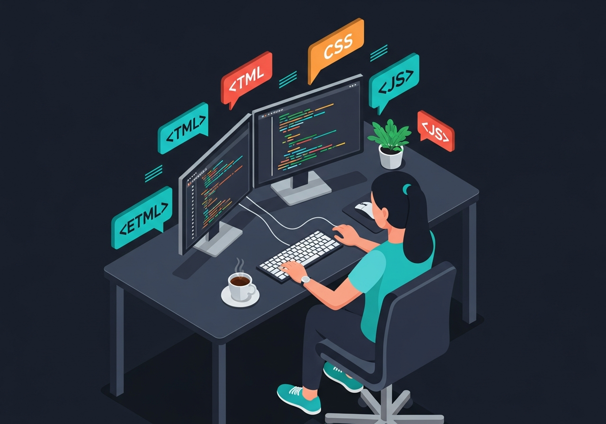

Piyush Agrahari
Full Stack Engineer|
Built and contributed to multiple websites across React.js, WordPress, Wix, and custom-coded solutions, transforming ideas and designs into responsive, production-ready web experiences..
Jabalpur, (M.P.)
Download CV
Get to Know Me
Isha Patel
I graduated with a Bachelor of Technology (B.Tech) in Computer Science and Engineering and have over 1+ year of professional experience in web development and technical support.
I enjoy turning ideas into functional, user-friendly web experiences and contributing to projects that create real value for users and businesses. Having worked across React.js, JavaScript, WordPress, Python, SQL, and modern AI-powered development tools, I can quickly adapt to new technologies, collaborate effectively with teams, and contribute across different stages of the development lifecycle.
I bring a strong learning mindset, ownership of my work, and a genuine passion for software development. I am always eager to take on meaningful opportunities where I can apply my skills, continue growing as a software engineer, and contribute to building reliable and impactful digital products.
Beyond engineering, I stay curious about emerging technologies and AI tools, continuously enhancing my skills and exploring better ways to build modern digital solutions.
Technologies & Tools
Technologies, platforms, and AI-powered tools I use to build modern websites, applications, and digital solutions.
Selected Work
A collection of websites, applications, and digital solutions I've designed and developed across web development.
Business Website
Banex Digital Website
Developed and managed the official website for Banex Digital, a digital marketing and IT solutions agency. Built responsive web pages, implemented modern UI layouts, and created a professional online presence focused on usability, performance, and seamless user experience across devices.
Real Estate Website
Real Estate Website
Created a responsive real estate website with modern property sections, service-focused content, and a clean user experience for browsing listings and business details.
Real Estate Website
Real Estate Landing Page
Designed and developed a second real estate web experience with professional layouts, responsive sections, and clear calls to action for property-related services.
Travel Website
Travels Website
Built a travel website with destination-focused sections, responsive layouts, and engaging content blocks designed to present services and travel experiences clearly.
CA Website
CA Website
Developed a professional chartered accountant website with service details, trust-focused content, responsive pages, and a polished business presentation.
Manufacturing Website
Manufacturing Website
Created a manufacturing business website with service showcases, company information, responsive layouts, and a structured interface for industrial clients.
Event Management Website
Event Management Website
Built an event management website with service sections, celebration-focused layouts, responsive design, and clear presentation for event planning offerings.
Doctor Website
Doctor Website
Designed a healthcare website for a doctor with service information, appointment-focused content, responsive pages, and a trustworthy visual structure.
Dental Clinic Website
Dental Clinic Website
Created a dental clinic website with treatment sections, clinic information, patient-friendly content, and responsive design for a professional healthcare presence.
E-Commerce Platform
bookStoreApp
Headless commerce with microservices. Sub-second page loads and seamless checkout flow at scale.
Advocate Website
Advocate Website
Developed a professional advocate website with service-focused sections, clear contact paths, responsive layouts, and a polished presentation for legal clients.
Cafe Website
Cafe Website
Built a cafe website with menu highlights, brand-focused sections, location details, responsive layouts, and a warm browsing experience for visitors.
Gym Website
Gym Website
Created a responsive gym website with program sections, membership information, motivational content, and clear calls to action for fitness clients.
Bakery Website
Bakery Website
Designed a bakery website with product showcases, shop information, inviting content sections, responsive styling, and an easy path for customers to explore offerings.
Photo Studio Website
Photo Studio Website
Built a photo studio website with portfolio-focused sections, service presentation, responsive galleries, and a clean visual structure for creative clients.
Doctor Portfolio
Dr. Mehta Website
Multiplayer workspace for distributed design teams. Live cursors, conflict resolution, full history.
Business Website
Clothing Brand Website
Developed a modern clothing brand website focused on product presentation, brand identity, responsive design, and seamless user experience across devices.
Business Website
Footwear Brand
Built a responsive footwear website showcasing products, brand information, and promotional content through clean and user-friendly layouts.
Business Website
Jewellery Brand Website
Designed a premium jewellery website focused on showcasing collections, craftsmanship, and brand presence through elegant and responsive web design.
Business Website
Pet Care Website
Created a pet care website highlighting services, customer information, and business offerings through a clean and accessible user interface.
Business Website
Salon Website
Designed and developed a salon website showcasing services, pricing information, appointment details, and modern business branding.
Business Website
Restaurant
Built a restaurant website featuring menu sections, business information, reservation details, and a responsive user experience.
Business Website
Digital Marketing Agency
Developed a modern agency website with animated user interfaces, responsive layouts, and service-focused sections designed to improve online presence and lead generation.
Business Website
Printing
Developed an animated printing business website featuring modern layouts, service showcases, interactive sections, and responsive user experiences.
Business Website
Company Portfolio Website
Converted Figma designs into a fully functional website. Focused on responsive layouts, dynamic content management, and maintaining design accuracy across devices..
Where I've worked.
Developed and managed the official Banex Digital website, creating responsive and user-friendly web pages aligned with the company's branding and business goals. Improved website layouts, responsiveness, and overall user experience across devices.
Designed and developed websites for businesses and personal brands using modern web technologies. Worked on custom websites, portfolio sites, WordPress projects, and responsive web solutions tailored to client requirements.
Provided technical support and troubleshooting for 7500+ POS software clients, resolved technical issues, and collaborated with teams to improve customer experience and product usability.
Open to new opportunities
Looking for my next role. If you have an exciting project or want to build something impactful together, let's connect.
Say Hello